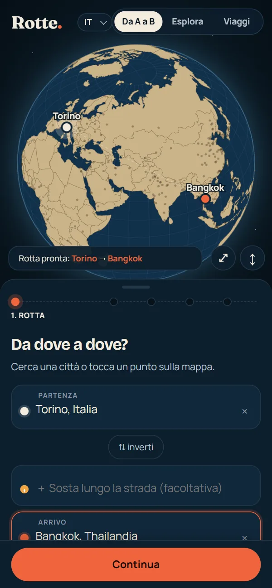
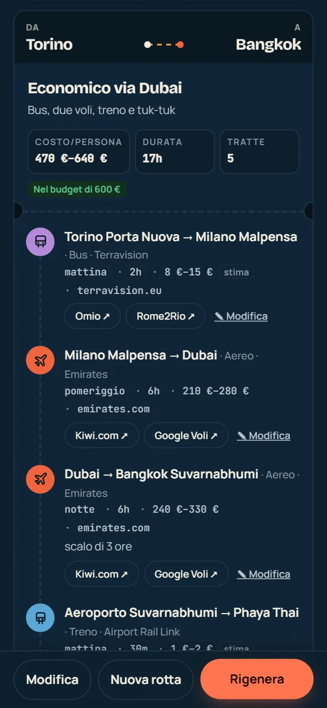
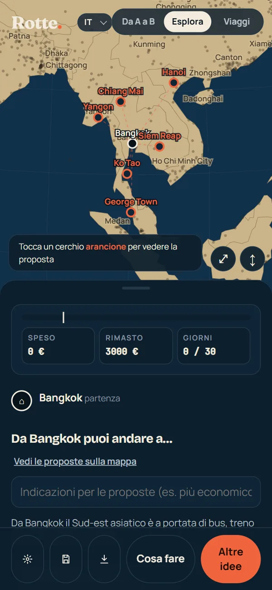
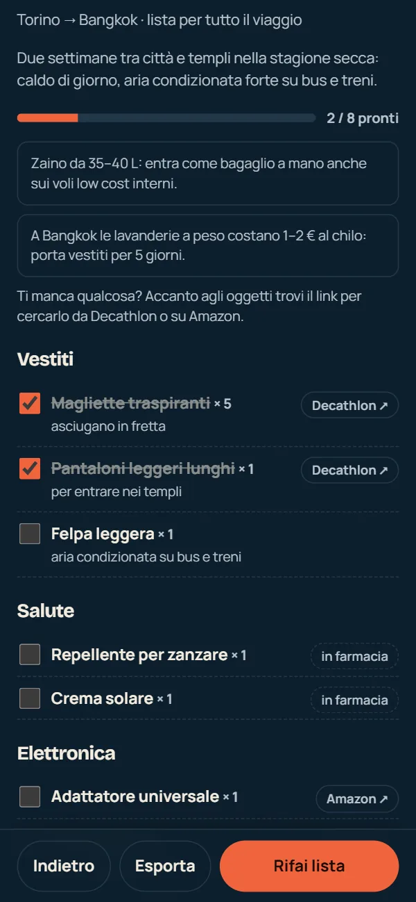

Da qui a ovunque, porta a porta
Gira il mondo.
Scegli la tua rotta.
Scegli due punti sul mappamondo: Rotte ti mostra ogni tratta per arrivarci, dal volo al traghetto, fino al tuk-tuk dell'ultimo chilometro.
Gratis, su invito. Funziona dentro Claude: serve un account Claude (va bene quello gratuito) e un invito di Alessio.
Prova una rotta: il mappamondo ti segue
Come funziona
Tre tappe, e sei già in viaggio.
Scegli due punti
Una città, un villaggio, un punto toccato sulla mappa. Aggiungi le soste che vuoi lungo la strada.
Decidi come
Il più veloce, il più economico o il più avventuroso. Anche in auto, camper o bici, in tenda o in ostello. Poi date e budget.
Parti
Tre proposte con ogni tratta, orari, costi e dove prenotare. Poi il ritorno, le cose da fare e cosa mettere nello zaino.
Guardala in azione
Da Torino a Bangkok in mezzo minuto.
Partenza e arrivo, stile di viaggio, l'itinerario con ogni tratta e la lista di cosa portare. Dati di esempio.

Scegli la rottaDue punti qualsiasi nel mondo. 
Ogni trattaMezzo, durata, costo e dove prenotare. 
Esplora a tappeScegli dove andare dopo, col budget. 
Cosa portareLa lista per tutto il viaggio.
Cosa fa
Tutto quello che serve per partire.
Pensata per chi viaggia spendendo il giusto e vuole sapere esattamente come arrivare, non solo dove. In italiano e in inglese.
Da A a B, porta a porta
Ogni spostamento, dal taxi per l'aeroporto al traghetto, con prezzi indicativi e link per prenotare.
Esplora a tappe
Non sai ancora dove finire? Parti, scegli la tappa dopo tra quelle che il budget ti permette, e così via.
Cosa fare
Per ogni meta, le cose da non perdere e quelle fuori dai soliti giri: luoghi strani, cibo locale, tradizioni.
Cosa portare
Lo zaino per tutto il viaggio, secondo clima, mezzi e alloggi, con il link per quello che ti manca.
Visti e documenti
Per ogni paese, anche negli scali, cosa serve per entrare con il tuo passaporto.
I miei viaggi
Salva, riapri e modifica le tratte a mano. Chiedi anche il ritorno, poi esporta il viaggio da stampare o in Google Calendar.
Quando costa meno
Accanto all'itinerario, i prezzi stimati per settimana o per mese: scegli il periodo più conveniente e rifai il viaggio su quelle date.
A modo tuo
Con i mezzi pubblici o con la tua auto, il camper, la moto o la bici. Dormi in tenda, in ostello, in couchsurfing o in hotel. Aggiungi soste e notti lungo la strada.
Il tuo programma
Metti da parte le esperienze che ti piacciono e aggiungi le tue: il programma del viaggio, da esportare e portare con te.
Guida per iniziare
Pronti a partire in due minuti.
La prima volta servono un paio di minuti, più il tempo dell'invito. Segui questi passaggi e al primo tentativo hai il tuo itinerario.
Crea un account Claude (gratis)
Rotte funziona dentro Claude. Se non hai ancora un account, crealo su claude.ai con la tua email o con Google: va bene quello gratuito. Se ce l'hai già, salta questo passaggio.
Chiedi l'invito
Per ora Rotte è su invito. Manda ad Alessio l'email con cui accedi a Claude: ti aggiunge lui e ti arriva una notifica. Senza invito la pagina si apre, ma non crea itinerari.
Chiedi l'invito ↗Oppure scrivi ad alessiorandazzo259@gmail.com.
Apri Rotte
Dopo l'invito, apri Rotte con lo stesso account Claude. Alla prima apertura trovi una breve presentazione, chiudila con Ho capito, iniziamo.
Apri Rotte ↗Prepara il primo viaggio
In Da A a B scrivi la partenza e l'arrivo, oppure tocca la mappa. Scegli lo stile, il budget e le date, poi premi Trova il percorso →.
Per provare subito: Torino → Bangkok, il più economico, date flessibili. È lo stesso viaggio del video qui sopra.
Dai il permesso a Claude
La prima volta Claude ti chiede se Rotte può usarlo per preparare l'itinerario: accetta. È il tuo account Claude a fare il lavoro, per questo l'app è gratis.
Confronta le proposte
Ricevi tre opzioni con tutte le tratte, i tempi e i costi. Guarda il percorso sulla mappa; ogni tratta ha il link per controllare il prezzo e prenotare.
Il resto da scoprire
Esplora a tappe se non sai ancora dove finire, Cosa fare per le esperienze in ogni meta, Cosa portare per lo zaino, Ritorno + per il viaggio di rientro, Salva per ritrovarlo in Viaggi, Esporta per stamparlo o metterlo nel calendario.
Sul telefono: apri Rotte nel browser, poi “Aggiungi a schermata Home” per ritrovarla come un'app.
Dimmi com'è andata.
Rotte è appena nata e la sto migliorando con chi la prova. Dopo averla usata, rispondi a un questionario di 2 minuti: anonimo, e le critiche sono le più utili.
Perché serve un account Claude.
Rotte è costruita su Claude, l'assistente di Anthropic. Gli itinerari li prepara il tuo Claude, con il tuo account: per questo l'app è gratis e non chiede iscrizioni.
- Va bene anche l'account Claude gratuito.
- Per ora si entra su invito: chiedilo ad Alessio con l'email del tuo account Claude.
- Alla prima richiesta Claude ti chiede il permesso.
- I viaggi che salvi restano nel tuo browser; per crearli Rotte usa il tuo account Claude.
Domande frequenti
Prima di partire.
È gratis?
Sì. Rotte non costa nulla. Se prenoti da alcuni link presenti nell'app, Rotte può ricevere una piccola commissione dal sito di prenotazione, senza nessun costo aggiuntivo per te.
I prezzi sono quelli veri?
Sono stime basate sulle tariffe tipiche del periodo. Prima di prenotare controlla sempre il prezzo aggiornato sul sito collegato a ogni tratta.
Devo installare qualcosa?
No. Si apre nel browser o nell'app Claude. Sul telefono puoi aggiungerla alla schermata Home per ritrovarla come un'app.
Le informazioni sui visti sono affidabili?
Sono indicazioni di massima. Prima di partire verifica sempre su viaggiaresicuri.it e sul sito dell'ambasciata del paese di destinazione.
Questo sito usa cookie?
Solo se li accetti. Con il tuo consenso carichiamo uno strumento di Travelpayouts che misura i clic sui link di viaggio e riconosce le prenotazioni fatte tramite i link di affiliazione. Se rifiuti, il sito funziona lo stesso e non viene caricato nulla. Puoi cambiare scelta quando vuoi: . Tutti i dettagli nella pagina Privacy e cookie.
Chi vede i miei viaggi?
I viaggi che salvi restano nel tuo browser: Alessio non li vede. Per preparare gli itinerari, però, Rotte usa il tuo account Claude: partenza, arrivo, date e preferenze vengono inviate a Claude e trattate da Anthropic secondo la sua informativa privacy.
Trasparenza: alcuni link di prenotazione presenti in Rotte sono link di affiliazione. Se prenoti tramite questi link, Rotte riceve una commissione dal sito partner; il prezzo per te non cambia. Prezzi, orari e requisiti di ingresso sono indicativi. Rotte è un progetto indipendente e non è affiliato ad Anthropic.
La prossima rotta
è la tua.
Per ora si entra su invito: mandami l'email del tuo account Claude e ti aggiungo.
Apri Rotte